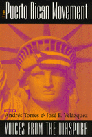

A long-awaited collection documents a missing chapter in the history of U.S. radicalism
A long-awaited collection documents a missing chapter in the history of U.S. radicalism


 A long-awaited collection documents a missing chapter in the history of U.S. radicalism
A long-awaited collection documents a missing chapter in the history of U.S. radicalism

|  |
The Puerto Rican MovementVoices from the Diasporaedited by Andr�s Torres and Jos� E. Vel�zquezpaper EAN: 978-1-56639-618-9 (ISBN: 1-56639-618-2) |
Outstanding Books Award, Gustavus Myers Center for the Study of Bigotry and Human Rights in North America, 1999
"This is a comprehensive treatment of one of the most important social movements dealing with the issues of colonialism and social justice. I strongly recommend this book to everyone interested in the movements for social change."
—Arthur Kinoy, Distinguished Professor of Law Emeritus, Rutgers University School of Law, and Co-President, Center for Constitutional Rights
Little attention has been paid to the Latino movements of the 1960's and 1970's in the literature of social movements. This volume is the first significant look at the organizations of the Puerto Rican movement, which emerged in the late 1960's and 1970's as a response to U.S. colonialism on the island and to the poverty and discrimination faced by most Puerto Ricans on the mainland.
To combat these two problems, and drawing on a tradition of patriotism and social responsibility, a number of organizations grew up, including the Young Lords Party (YLP), which later evolved into the Puerto Rican Revolutionary Workers Organization; the Pro-Independence Movement (MPI), which evolved into the U.S. branch of the Puerto Rican Socialist Party; El Comit�; the Puerto Rican Student Union (PRSU); the Movement for National Liberation (MLN); and the Armed Forces of National Liberation (FALN). The Puerto Rican Movement looks at all these groups as specific organizations of real people in such places as Boston, Chicago, Hartford, New York, and Philadelphia.
The contributors, almost all of whom were involved with the organizations they describe, provide detailed descriptions and historical analyses of the Puerto Rican Left. Interviews with such key figures as Elizam Escobar, Piri Thomas, and Luis Fuentes, as well as accounts by people active in the gay/lesbian, African-American, and White Left movements add a vivid picture of why and how people became radicalized and how their ideals intersected with their group's own dynamics.
These critical assessments highlight each organization's accomplishments and failures and illuminate how different sets of people, in different circumstances, respond to social problems-in this case, the "national question" and the issues of social justice and movement politics.
Excerpt available at www.temple.edu/tempress
"At last we have a collection of writings that does justice to the Puerto Rican Left movements that emerged in the late 1960s. In the 1990s the inequality and marginalization that have been part of the Puerto Rican reality increasingly affects the larger American society. All readers—Boricuas and non-Boricuas—will learn from the experiences described in these pages."
—Frank Bonilla, Thomas Hunter Professor of Sociology, City University of New York
"...the essay by Carmen Teresa Whalen on the Young Lords in Philadelphia provides the rich insight into characteristic aspects of this community that only a historian can advance by using interviews of social actors and examining the record, thus opening new vistas of the Philadelphia experience."
—The Journal of American History
Preface
Acknowledgments
1. Introduction: Political Radicalism In The Diaspora—the Puerto Rican Experience; Andr�s Torres
Part I: The Core Left
2. Political Cultures Of The Puerto Rican Left In The United States; Roberto P. Rodriguez-Morazzani
3. Coming Full Circle: The Puerto Rican Socialist Party, U.S. Branch; Jos� E. Vel�zquez
4. Pushing Left To Get To The Center: Puerto Rican Radicalism In Hartford, Connecticut; Jos� E. Cruz
5. Another West Side Story: An Interview With Members Of El Comite-MINP; Jos� E. Vel�zquez
6. Bridging Homeland And Barrio Politics: The Young Lords In Philadelphia; Carmen Teresa Whalen
7. "�Rifle, Ca��n, y Escopetal!": A Chronicle Of The Puerto Rican Student Union; Basilio Serrano
8. Unreconstructed Revolutionaries: Today's Puerto Rican Political Prisoners/Prisoners Of War; Jan Susler
Part II: Histories And Reflections
9. La Vida Pura: A Lord Of The Barrio; Pablo Guzm�n
10. "In The Belly Of The Beast": Beyond Survival; Esperanza Martell
11. Our Movement: One Woman's Story; Carmen Vivian Rivera
12. �PALANTE, SIEMPRE PALANTE! The Young Lords; Iris Morales
13. Artist, Writer, And Political Prisoner: An Interview With Elizam Escobar; Carlos Gil
14. An Oral History Of The Puerto Rican Socialist Party In Boston; Angel A. Amy Moreno De Toro
Photo Gallery
Part III: Community And Solidarity Struggles
15. Poet, Writer, A Voice For Unity: An Interview With Piri Thomas Humberto Cintr�n
16. Puerto Ricans And The Community Control Movement: An Interview With Luis Fuentes; James Jennings and Francisco Chapman
17. P�ginas Omit�das: The Gay And Lesbian Presence; Luis Aponte-Par�s and Jorge B. Merced
18. An African American-Puerto Rican Connection; James Early
19. Forging Solidarity: Politics, Protest, And The Vieques Solidarity Network; Katherine McCaffrey
Notes
Bibliography
Contributors
Index
Andr�s Torres is Professor, College of Public and Community Service, University of Massachusetts, Boston.
Jos� E. Vel�zquez is a Social Studies teacher in the Newark, New Jersey, public school system.
Contributors: Angel A. Amy Moreno de Toro, Luis Aponte-Par�s, Francisco Chapman, Humberto Cintr�n, Jos� E. Cruz, James Early, Carlos Gil, Pablo Guzm�n, James Jennings, Esperanza Martell, Katherine McCaffrey, Jorge B. Merced, Iris Morales, Carmen Vivian Rivera, Roberto Rodr�guez-Morazzani, Basilio Serrano, Jan Susler, Carmen Teresa Whalen, and the editors.
Puerto Rican Studies, edited by Luz del Alba Acevedo, Juan Flores, and Emilio Pantojas-Garc�a.
The objective of Puerto Rican Studies, edited by Luz del Alba Acevedo, Juan Flores, and Emilio Pantojas-Garc�a, is to bring to publication work on the Puerto Rican experience that is of interest to a wide range of audiences beyond the fields of Puerto Rican and ethnic studies, as well as to provide new insights into other interdisciplinary fields such as cultural studies, women's studies, and urban studies. The series provides a forum for young, creative and daring scholars venturing into nontraditional ways of dealing with issues in Puerto Rican studies. The editors are concerned with producing work that will appeal to the wider North American and English-speaking audiences reaching scholars, writers, activists, feminists, and intellectually curious people throughout the hemisphere and Europe.
© 2015 Temple University. All Rights Reserved. This page: http://www.temple.edu/tempress/titles/1352_reg.html.